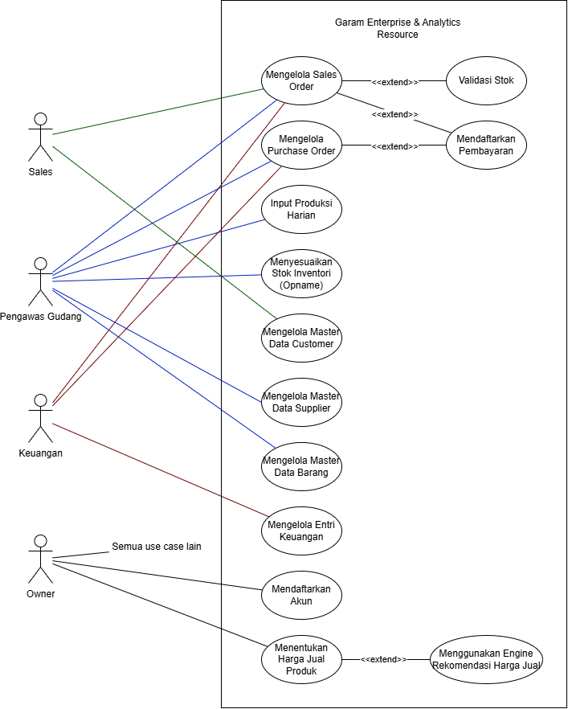
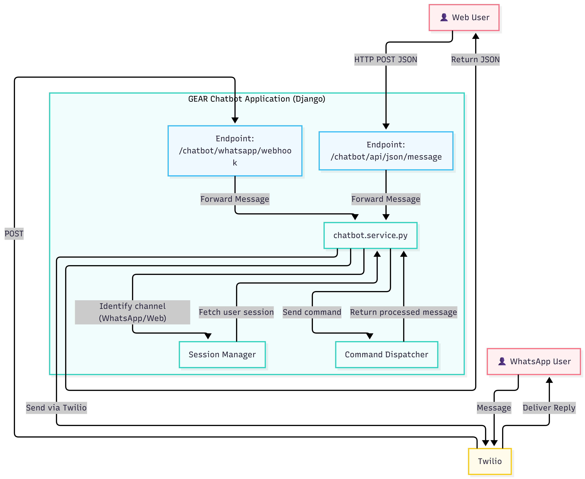

Project information, diagrams, and screenshots are shared with client approval. Sensitive business data has been removed or anonymized.
GEAR
Garam Enterprise & Analytics Resource
Role
Lead Developer
Timeline
Jan – May 2026
Team
5 Developers
Users
30+ Employees
GEAR is a custom web-based mini-ERP developed as a capstone project under Universitas Indonesia
supervision and deployed to a real Indonesian salt manufacturing and distribution business.
It replaces paper-based ledgers and disconnected spreadsheets with a unified digital operational
backbone covering procurement, inventory, daily production, sales, finance, analytics, pricing,
and a WhatsApp chatbot. The entire system runs on a production Linux VPS.
The system is structured around document workflows. Users create operational documents: purchase
orders, daily production records, sales orders, finance entries, and delivery notes. Services then
produce side effects such as stock movements, event logs, finance entries, and partner statistics.
All modules share the same database, role-based permission layer, and event audit log. Business logic
is isolated in a service layer so it stays consistent whether invoked from the web UI, an HTMX
fragment, or a chatbot command.
Use Cases
The system has four primary roles: Sales, Pengawas Gudang
(Warehouse), Keuangan (Finance), and Owner. The diagram below maps
each role to the operations it is permitted to trigger.

Use Case Diagram for Garam Enterprise & Analytics Resource
Modules
GEAR is organized into seven application modules, each owning a distinct business domain.
Sales
Sales Orders & Delivery
Manages the full sales order lifecycle across eight states: Draft → Awaiting Payment →
Payment Confirmation → Stock Validation → Ready to Ship → In Shipping → Completed (or Cancelled).
Product stock is deducted only at stock validation. A versioned delivery note is created
automatically at that point and can be revised until the order ships. On completion, customer
transaction statistics are updated.
Procurement
Purchase Orders
Handles raw material purchasing through a three-step state machine: Pending → Received →
Payment Validated. Receiving the order creates raw-material stock movements and increments stock.
Payment validation generates an expense finance entry and updates supplier transaction statistics.
Voiding at any stage reverses all created stock movements and finance entries.
Inventory
Stock, Production & BOM
Tracks raw-material and finished-product stock through signed movement rows. Daily production
records use a versioned snapshot pattern: each revision first reverses movements from the
previous snapshot, then replays the new quantities. Bill of Materials lines define the
raw-material consumption required per product batch. Stock opname (adjustment) creates a
corrective movement for the delta between physical and system stock.
Finance
Entries & Ledger
Centralizes all income and expense entries. Entries generated by sales payment confirmation and
purchase payment validation are system-owned and cannot be manually edited. Corrections are
applied through document cancellation or void, which creates linked reversal entries. Manual entries
support soft deletion and restoration. Entry categories are also soft-deletable, except for
protected system categories.
Analytics
Reporting Dashboards
Read-only dashboards over operational data: sales performance by rep (frequency, revenue, AOV);
finance P&L by week, month, or year with PDF export via ReportLab; raw-material and
finished-product stock time series; customer loyalty segmentation (New, Loyal, At Risk,
Moderate, Inactive); and sales lifecycle funnel metrics.
Pricing
Price Recommendation
Recommends product selling prices using BOM cost plus a configurable margin percentage. The base
cost is computed from each BOM line's quantity multiplied by the weighted-average unit price of
that raw material across finalized purchase orders. A worksheet UI and a JSON API allow managers
to review and push recommended prices directly to product records.
Auth
Accounts & Permissions
Uses a custom Account model with phone number as the login identifier instead of
username. Role-based access is enforced through Django groups (Sales, Warehouse, Finance) with
Owner represented by is_superuser. Supports account creation, deactivation,
restoration, self-service password change, and password reset via email (Anymail/Resend).
Chatbot
Chatbot Interface
Provides two access interfaces: a web chat UI and WhatsApp via Twilio. Both channels share the
same service layer and session management, with access scoped to the authenticated user's
Django permissions.
Sessions operate in two modes. In default mode, the bot responds to a set of
pre-defined commands (stok jadi, create so, create po,
daftar so, detail so, stok mentah) with deterministic
outputs routed through the same service functions used by the web UI. Each command is
permission-checked before execution.
Sending ai switches the session to AI mode, where free-form
messages are forwarded to the Gemini LLM. The system prompt is assembled per-request from a
base ERP context plus module-specific context files for only the modules the user can access,
with live DB snapshots injected when the user has the relevant permissions. The conversation
history (each exchange of user message and LLM reply) is stored as temporary context in the
session using a bounded data structure to prevent unbounded memory growth. Sending
exit or idling for 30 minutes clears the session and returns to default mode.
Infrastructure Architecture
Production traffic enters through the VPS public IP after DNS resolution. Nginx listens on ports 80
and 443, handles HTTPS termination via Certbot, serves /media/ and static files
(via Whitenoise) directly, and forwards Django requests to Gunicorn over a local Unix socket.
The Django application connects to a PostgreSQL database on localhost:5432.
Three external integrations are isolated at the application edge: Resend API for email,
Gemini API for AI responses, and Twilio for WhatsApp.
Infrastructure Architecture: production deployment topology
Chatbot Architecture
The chatbot is accessible through two channels: WhatsApp via Twilio and a web JSON endpoint.
Both channels share the same service layer and session management.
Incoming messages from either channel are forwarded to chatbot.service.py, which
identifies the channel, fetches the user's session from the Session Manager, and routes the message
to the Command Dispatcher. Processed replies are returned to the service, which sends them back
through the originating channel: JSON for web users, or via Twilio for WhatsApp users.
Sessions operate in two modes. In command mode (default), the dispatcher matches
known commands (stok jadi, create so, create po, etc.),
checks the user's permissions, and routes to the appropriate handler. Each handler calls the same
service functions used by the web UI. Sending ai switches to LLM mode, where
free-form messages are passed to the Gemini API with a permission-scoped system prompt.
Sessions reset to command mode after 30 minutes of inactivity.

Chatbot Architecture: dual-channel entry with shared service layerCommand Dispatcher: internal routing detail